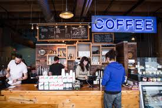

About Us
Aroma Coffee was founded by two musicians Paul McCarthy and John Lennon while doing a tour for the Beatles. During the tour both Paul and John would talk well up to the early hours of the morning about what would make a great cup of coffee.
To overcome their fatigue, the two would brew a cup of this coffee to come out on stage and play music to their might. The recipe was the blueprint that become of Aroma Coffee with the first shop opening on a humble street in a small town in the 1970's to be the international chain today. This is the strength that Aroma Coffee is built upon.
Today Aroma Coffee is enjoyed by all over the world by this historic ingredient and whenever you sample a cup of our brand, you too will agree that Aroma Coffee is the greatest cup of coffee in the world.
The people that make Aroma Coffee work.
.jpg)
Jean Davis
Our lovely Jean is the Managing Directory of Aroma Coffee. She works here because the coffee tastes so good and has dead hard commentment to spread the word.

Andy Mang
Andy takes care of the cultivating of coffee beans to the arrival to your local shop. He is dedicated in the cause of good coffee.
James Shay
This great man works in Quality Assurance. Before the coffee get delivered to our stores, James samples the beans for taste. He believes that he is in the best job in the world as he drinks coffee for a living.
